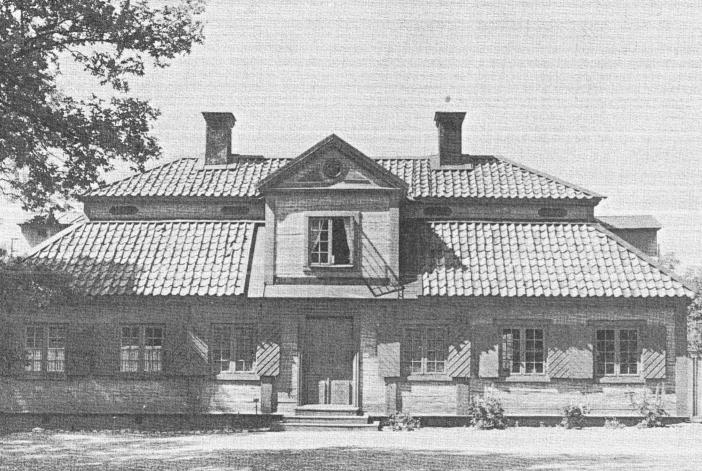
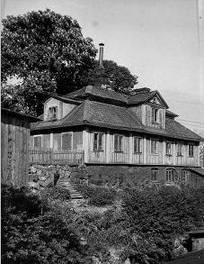
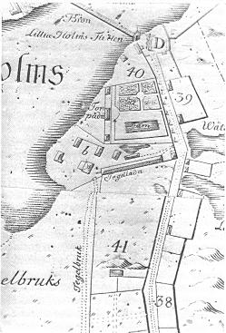
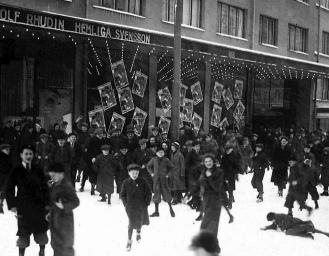
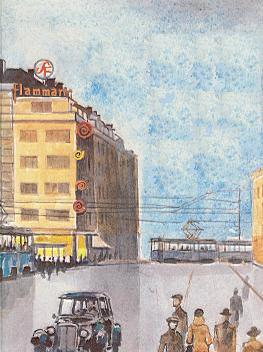
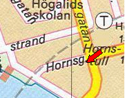
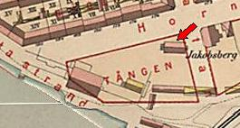

|
Jakobsberg

Ur Malmgårdarna i Stockholm, Birgit Lindberg, 1985
På Skansen finns bland alla vackra och sevärda hus en malmgårdsflygel från västra Södermalm. Den
låg en gång i området vid Hornstull men är nu personalbostad och ligger i utkanten av
Stockholmskvarteret. Det är Jakobsbergs malmgård som på sin gamla plats bara har efterlämnat en del
träd, däribland en väldig kastanj.
|
Gårdens historia börjar år 1670. Det året erhöll rådmannen Johan Larsson Laurinius fribrev
på en tomt som "Ingenieuren de la Vallee" utstakat. Laurinius börjar också bebygga den "med
hus och plank" och hoppas, att den skall bli "till stadens heder och prydnad". Redan efter tre år
säljer han dock sin malmgård till skräddaren Jöns Krook.
Inte heller denne har gården länge, för redan år 1675 har den övergått till hans fordringsägare,
handelsmännen Jöns Therlow och Johan Prestbeck. Efter många och långa stridigheter hade de
år 1681 fått tillstånd att bedriva vinskänkeri på sin gård. Att källarrättigheterna var så
eftertraktade berodde på att området låg intill den på 1660-talet färdigställda bron till
Liljeholmen.
Affärerna blev dock inte så framgångsrika. Friherrinnan Maria Hägerstierna, gift van der
Noot, tog gården som ersättning för skuld och sålde den år 1704 till tobaksfabrikören Herman
Daniel Hermanni.
|
|

Från NV 1926
|
Samtidigt hade denne fått friköpa en del av marken, som tillhörde Horns
tegelbruk, mot att han byggde en ruddamm som även skulle kunna förse bruket med allt vatten
som behövdes. Tegelbruket gränsade till malmgårdstomten. Laurinius hade börjat bebygga
området, men troligtvis är det Hermanni som är den egentlige skaparen av egendomen. Han
ägde gården till 1719.
Under Hermannis tid inträffade det märkliga besöket av den polske konungen Stanislaus
Lescinski. Denne man, som sattes som konung i Polen av Karl XII år 1704, sov alltså här på
värdshuset-malmgården en natt 1711 innan han fortsatte till Kungshuset på Riddarholmen för
att uppvakta riksänkedrottningen Hedvig Eleonora: Lescinski slutade sina dagar som filosofisk
och politisk författare.
En kort tid ägdes gården av överståthållaren Gustaf Adam Taube, som år 1733 överlät den till politie-,
senare handelsborgmästaren Elias Torpadius. Denne hade stället i 15 år och utvidgade ytterligare med
mark som tillhört Horns tegelbruk. Pengar hade han säkert. I sitt första äktenskap var han nämligen gift med en dotter till den rike bryggaråldermannen Falck.
|


|
|
På Tillaei karta 1733 ser man
hur gården låg. Närmast Hornstullsvägen var trädgården och den av Hermanni byggda
dammen. Manbyggnaden låg mot sjön och flyglarna i linje med denna. Där fanns självklart
också stall och ladugård med plats för 28 kor, orangeri, uthus och fiskarbod vid en brygga mot
sjön. Öster därom låg tegelbrukets hus och ägor. Malmgårdsägorna är på kartan utmärkta
"Torpadii".
Elias Torpadius dog 1747 och hans arvingar sålde egendomen till kaffeskänken Johan
Strömbäck år 1749. Den omfattade då 381 710 kvadratalnar (ca 133 600 m1). Kaffehusen var
vid den här tiden på modet, och eftersom Strömbäcks kaférörelse låg i hans egen fastighet i
hörnet av Riddarhustorget och Stora Nygatan var den säkert en inkomstbringande affär. Det
var troligen dessa inkomster som gjorde att han kunde köpa Jakobsberg, som på hans tid
kallades Johannesberg.
Från år 1759 var tituläre bergsrådet Adolph Adolphsson Christiernin ägare till egendomen.
Han var samtidigt ägare till Heleneborg. Då Christiernin måste gå i konkurs såldes malmgården
på bancoauktion till apotekaren Jakob Bark, som gav den namnet Jakobsberg.
|
|
Efter Barks död övergick gården till "hans efterträdare i äktenskapet" Friedrich Ziervogel.
Även han var apotekare och övertog också Barks apotek. Ziervogel hade efter sin far ärvt en
samling fåglar, fiskar, snäckor och mineralier. Dessa utökade han och donerade till
Vetenskaps-Societeten i Uppsala. För att på plats kunna ordna dem flyttade han tillsammans med
sina samlingar och sålde därför malmgården 1789.
Den som övertog gården var grosshandlaren Johan Fredrik Hebbe, vars änka Elisabeth Hebbe
(f Tottie) lät uppföra en ny tvåvånings stenbyggnad på den plats där biografen Flamman sedan
kom att byggas. Elisabeth Hebbe avled år 1814.
Så förenades Jakobsberg och Heleneborg åter. Israel af Skenstam var köpare år 1825 och här fanns nu
både blekes- och bensvärtefabrik.
|
|

Barnföreställning på Flamman 1934
|
|

Omslaget till boken Ett stilla gathörn av Thorleif Hellbom, 1992, med teckningar av Hasse Erikson
|
|


Redan år 1826 såldes de båda egendomarna igen.
Nästa industri som kom till Jakobsberg var ett garveri. Det anlades av grosshandlaren Ludvig
Tydén, som köpte malmgården år 1845. Garveriet, som var det andra i storleksordningen av
Stockholmsgarverierna med ett tillverkningsvärde på omkring en kvarts miljon, drevs i dryga
trettio år av släkten Tydén. År 1877 tycks Ludvig Tydén vilja upphöra med sin fabrik. Han
inbjuder nämligen till bildandet av ett aktiebolag.
Resultatet blev att Stockholms stad köpte gården 1882 för 298 000 kronor. Köpet gjordes delvis för
framtida gaturegleringar men framförallt för att hindra "sådan fabriksrörelse som kunde menligt
inverka på Årstavikens vatten". Ett utökat garveri kunde ju få svåra konsekvenser för Årstaviken som
sedan några år var Stockholms vattentäkt.
|
Nu raserades trädgården och nio stora stenhus uppfördes. Av de gamla husen sparades den östra
flygeln och det tvåvåningars stenhus som Elisabeth Hebbe hade uppfört. Därefter började andra
aktiviteter på gården i Stockholms utkant. 1886 öppnade Stockholms stad en "dårstuga". 1887
flyttade Stockholms IV kår av Frälsningsarmen hit. Efter några år på annan plats var den tillbaka
1896 och då i den gamla garverilokalen, där "dårhuset" varit inhyst.
Vid samma tid som Viktor Rydberg bodde på Heleneborg bodde August Strindberg på
Jakobsberg i den sparade flygeln. I motsats till Rydberg hade Strindberg en svår tid. Han skriver i
ett brev till författarkollegan Gustaf af Geijerstam: "fullsuten med obetalda räkningar, supit sedan
andra januari och måst umgås med komprometterande folk, posterat i gränder och gathörn, utanför
pantlånekontor och procentare".
Sedan dess har Jakobsberg inhyst en tvättinrättning och en barnkrubba, tills den kvarstående östra
flygeln skänktes till Skansen av Stockholms stad. 1936 fick den sin nuvarande plats i
Stockholmskvarteret, men då den saknar ursprunglig inredning visas den inte. Exteriören är dock lika
vacker nu som den en gång var: gulmålad och med väggarna symmetriskt indelade av grå pilastrar.
Den, liksom Groens malmgård, visar hur man under barocken sökte imitera putsarkitektur. Den ligger
också mycket vackert med doftande lavendel på slänten ned mot Skansens Kungstensgata.
|
|